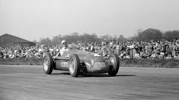
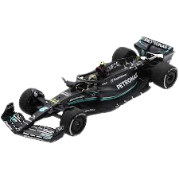
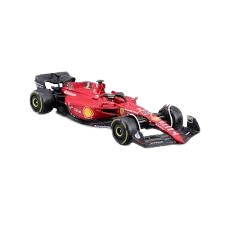
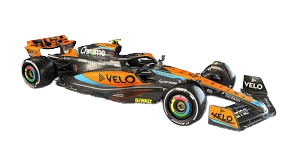
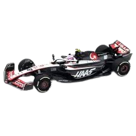
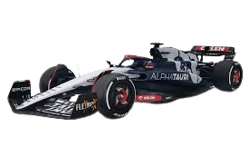
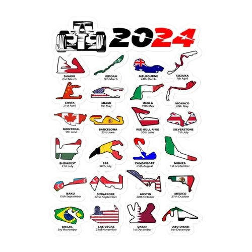

La Fórmula 1, conocida como F1, es la máxima categoría del automovilismo mundial y representa el pináculo de la velocidad, la tecnología y la estrategia en el deporte motor. La F1 no solo se trata de la velocidad de los coches, sino también de la habilidad de los pilotos, que deben tomar decisiones rápidas y precisas en condiciones cambiantes. La Fórmula 1 también ha sido pionera en cuestiones de sostenibilidad, buscando reducir su huella de carbono y adoptar prácticas más ecológicas.
Historia

La Fórmula 1 (F1) comenzó en 1950 como el Campeonato Mundial de Pilotos, organizado por la Federación Internacional del Automóvil (FIA). La primera carrera oficial fue en Silverstone, Reino Unido, y el italiano Giuseppe Farina fue el primer campeón. En la década de 1950, Juan Manuel Fangio dominó el deporte con cinco títulos. Durante los años 60 y 70, el deporte se hizo más popular, con pilotos icónicos como Jim Clark y Niki Lauda.
En los 80, Ayrton Senna y Alain Prost protagonizaron una rivalidad legendaria, mientras que los avances tecnológicos comenzaron a transformar los autos. En los 90, Michael Schumacher emergió como una superestrella, ganando siete campeonatos. Desde entonces, la F1 ha seguido evolucionando, con marcas como Ferrari, McLaren, y más tarde Mercedes, dominando diferentes épocas. En la última década, Lewis Hamilton y Max Verstappen han sido las figuras principales, mientras que la tecnología híbrida y las regulaciones de seguridad han transformado la competición.
Pilotos-Escuderias
Piloto
Escudería
Foto del coche
Max Verstappen
Red Bull Racing
Sergio Pérez
Lewis Hamilton
Mercedes

George Russell
Charles Leclerc
Ferrari

Carlos Sainz
Lando Norris
McLaren

Oscar Piastri
Fernando Alonso
Aston Martin
Lance Stroll
Pierre Gasly
Alpine
Esteban Ocon
Valtteri Bottas
Kick Stake
Zhou Guanyu
Kevin Magnussen
Haas

Nico Hülkenberg
Yuki Tsunoda
AlphaTauri

Daniel Ricciardo
Alexander Albon
Williams
Franco Colapinto
Circuitos de la FORMULA1
La FORMULA1 cuenta actualmente con 24 circuitos en los que disputan las carreras a lo largo de la temporada.

Fernando Alonso
Fernando Alonso es un destacado piloto español de Fórmula 1, reconocido por su habilidad técnica y estratégica en las carreras. Nacido el 29 de julio de 1981 en Oviedo, España, Alonso debutó en la Fórmula 1 en 2001 y rápidamente destacó por su talento. Ganó dos campeonatos mundiales consecutivos con Renault en 2005 y 2006, siendo el piloto más joven en lograrlo en ese momento. Alonso también ha competido en otras categorías, como el Campeonato Mundial de Resistencia de la FIA y las 24 Horas de Le Mans, demostrando su versatilidad y éxito en diferentes disciplinas del automovilismo.